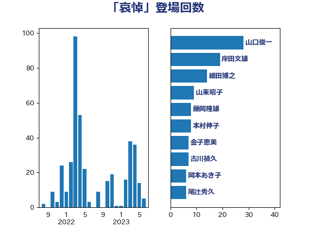

単語「哀悼」

| 山口俊一 | 自由民主党 | 28 回 |
| 岸田文雄 | 自由民主党 | 19 回 |
| 細田博之 | 自由民主党 | 14 回 |
| 山東昭子 | 自由民主党 | 9 回 |
| 藤岡隆雄 | 立憲民主党 | 8 回 |
| 本村伸子 | 日本共産党 | 8 回 |
| 金子恵美 | 立憲民主党 | 7 回 |
| 古川禎久 | 自由民主党 | 7 回 |
| 岡本あき子 | 立憲民主党 | 6 回 |
| 尾辻秀久 | 無所属 | 6 回 |
| 斉藤鉄夫 | 公明党 | 5 回 |
| 鈴木俊一 | 自由民主党 | 4 回 |
| 谷公一 | 自由民主党 | 4 回 |
| 西銘恒三郎 | 自由民主党 | 4 回 |
| 神津たけし | 立憲民主党 | 4 回 |
| 山田勝彦 | 立憲民主党 | 4 回 |
| 佐々木さやか | 公明党 | 4 回 |
| 高木毅 | 自由民主党 | 3 回 |
| 谷川とむ | 自由民主党 | 3 回 |
| 西岡秀子 | 国民民主党 | 3 回 |
| 菅家一郎 | 自由民主党 | 3 回 |
| 若松謙維 | 公明党 | 3 回 |
| 田名部匡代 | 立憲民主党 | 3 回 |
| 渡辺博道 | 自由民主党 | 3 回 |
| 東徹 | 日本維新の会 | 3 回 |
| 市村浩一郎 | 日本維新の会 | 3 回 |
| 山本左近 | 自由民主党 | 3 回 |
| 塩田博昭 | 公明党 | 3 回 |
| 城井崇 | 立憲民主党 | 3 回 |
| 古川元久 | 国民民主党 | 3 回 |
| 一谷勇一郎 | 日本維新の会 | 3 回 |
| 高橋千鶴子 | 日本共産党 | 2 回 |
| 高木啓 | 自由民主党 | 2 回 |
| 馬場伸幸 | 日本維新の会 | 2 回 |
| 長島昭久 | 自由民主党 | 2 回 |
| 野田聖子 | 自由民主党 | 2 回 |
| 道下大樹 | 立憲民主党 | 2 回 |
| 蓮舫 | 立憲民主党 | 2 回 |
| 羽田次郎 | 立憲民主党 | 2 回 |
| 米山隆一 | 立憲民主党 | 2 回 |
| 篠原豪 | 立憲民主党 | 2 回 |
| 秋葉賢也 | 自由民主党 | 2 回 |
| 石井章 | 日本維新の会 | 2 回 |
| 田村まみ | 国民民主党 | 2 回 |
| 田島麻衣子 | 立憲民主党 | 2 回 |
| 熊谷裕人 | 立憲民主党 | 2 回 |
| 浅野哲 | 国民民主党 | 2 回 |
| 沢田良 | 日本維新の会 | 2 回 |
| 梅村みずほ | 日本維新の会 | 2 回 |
| 松川るい | 自由民主党 | 2 回 |
| 杉久武 | 公明党 | 2 回 |
| 末松義規 | 立憲民主党 | 2 回 |
| 星野剛士 | 自由民主党 | 2 回 |
| 早坂敦 | 日本維新の会 | 2 回 |
| 打越さく良 | 立憲民主党 | 2 回 |
| 庄子賢一 | 公明党 | 2 回 |
| 川崎ひでと | 自由民主党 | 2 回 |
| 島尻安伊子 | 自由民主党 | 2 回 |
| 岩谷良平 | 日本維新の会 | 2 回 |
| 山谷えり子 | 自由民主党 | 2 回 |
| 山崎誠 | 立憲民主党 | 2 回 |
| 山下貴司 | 自由民主党 | 2 回 |
| 小川淳也 | 立憲民主党 | 2 回 |
| 安江伸夫 | 公明党 | 2 回 |
| 大口善徳 | 公明党 | 2 回 |
| 堀内詔子 | 自由民主党 | 2 回 |
| 住吉寛紀 | 日本維新の会 | 2 回 |
| 伊藤俊輔 | 立憲民主党 | 2 回 |
| 中野英幸 | 自由民主党 | 2 回 |
| 鬼木誠 | 立憲民主党 | 1 回 |
| 高橋光男 | 公明党 | 1 回 |
| 高木宏壽 | 自由民主党 | 1 回 |
| 高木かおり | 日本維新の会 | 1 回 |
| 高市早苗 | 自由民主党 | 1 回 |
| 馬場雄基 | 立憲民主党 | 1 回 |
| 音喜多駿 | 日本維新の会 | 1 回 |
| 青山繁晴 | 自由民主党 | 1 回 |
| 青山周平 | 自由民主党 | 1 回 |
| 階猛 | 立憲民主党 | 1 回 |
| 阿部弘樹 | 日本維新の会 | 1 回 |
| 長谷川英晴 | 自由民主党 | 1 回 |
| 長友慎治 | 国民民主党 | 1 回 |
| 鈴木義弘 | 国民民主党 | 1 回 |
| 鈴木敦 | 国民民主党 | 1 回 |
| 鈴木宗男 | 日本維新の会 | 1 回 |
| 金城泰邦 | 公明党 | 1 回 |
| 野田国義 | 立憲民主党 | 1 回 |
| 野田佳彦 | 立憲民主党 | 1 回 |
| 里見隆治 | 公明党 | 1 回 |
| 酒井庸行 | 自由民主党 | 1 回 |
| 遠藤良太 | 日本維新の会 | 1 回 |
| 輿水恵一 | 公明党 | 1 回 |
| 足立敏之 | 自由民主党 | 1 回 |
| 赤澤亮正 | 自由民主党 | 1 回 |
| 谷田川元 | 立憲民主党 | 1 回 |
| 谷合正明 | 公明党 | 1 回 |
| 藤田文武 | 日本維新の会 | 1 回 |
| 藤巻健太 | 日本維新の会 | 1 回 |
| 舟山康江 | 国民民主党 | 1 回 |
| 紙智子 | 日本共産党 | 1 回 |
| 竹詰仁 | 国民民主党 | 1 回 |
| 穀田恵二 | 日本共産党 | 1 回 |
| 稲津久 | 公明党 | 1 回 |
| 福山哲郎 | 立憲民主党 | 1 回 |
| 神田潤一 | 自由民主党 | 1 回 |
| 石破茂 | 自由民主党 | 1 回 |
| 石川昭政 | 自由民主党 | 1 回 |
| 石川大我 | 立憲民主党 | 1 回 |
| 石井浩郎 | 自由民主党 | 1 回 |
| 畦元将吾 | 自由民主党 | 1 回 |
| 田村貴昭 | 日本共産党 | 1 回 |
| 田村智子 | 日本共産党 | 1 回 |
| 甘利明 | 自由民主党 | 1 回 |
| 牧野たかお | 自由民主党 | 1 回 |
| 滝波宏文 | 自由民主党 | 1 回 |
| 源馬謙太郎 | 立憲民主党 | 1 回 |
| 浅田均 | 日本維新の会 | 1 回 |
| 江藤拓 | 自由民主党 | 1 回 |
| 江田憲司 | 立憲民主党 | 1 回 |
| 永井学 | 自由民主党 | 1 回 |
| 比嘉奈津美 | 自由民主党 | 1 回 |
| 櫻田義孝 | 自由民主党 | 1 回 |
| 櫻井周 | 立憲民主党 | 1 回 |
| 櫻井充 | 自由民主党 | 1 回 |
| 橋本岳 | 自由民主党 | 1 回 |
| 横沢高徳 | 立憲民主党 | 1 回 |
| 榛葉賀津也 | 国民民主党 | 1 回 |
| 森英介 | 自由民主党 | 1 回 |
| 柴田巧 | 日本維新の会 | 1 回 |
| 枝野幸男 | 立憲民主党 | 1 回 |
| 林芳正 | 自由民主党 | 1 回 |
| 松野博一 | 自由民主党 | 1 回 |
| 松本剛明 | 自由民主党 | 1 回 |
| 杉田水脈 | 自由民主党 | 1 回 |
| 木原稔 | 自由民主党 | 1 回 |
| 有村治子 | 自由民主党 | 1 回 |
| 新垣邦男 | 立憲民主党 | 1 回 |
| 斎藤アレックス | 国民民主党 | 1 回 |
| 徳永エリ | 立憲民主党 | 1 回 |
| 広瀬めぐみ | 自由民主党 | 1 回 |
| 平沼正二郎 | 自由民主党 | 1 回 |
| 平木大作 | 公明党 | 1 回 |
| 工藤彰三 | 自由民主党 | 1 回 |
| 川田龍平 | 立憲民主党 | 1 回 |
| 岬麻紀 | 日本維新の会 | 1 回 |
| 岩渕友 | 日本共産党 | 1 回 |
| 山本博司 | 公明党 | 1 回 |
| 山本佐知子 | 自由民主党 | 1 回 |
| 山口那津男 | 公明党 | 1 回 |
| 小里泰弘 | 自由民主党 | 1 回 |
| 小渕優子 | 自由民主党 | 1 回 |
| 小沢雅仁 | 立憲民主党 | 1 回 |
| 宮本周司 | 自由民主党 | 1 回 |
| 宮口治子 | 立憲民主党 | 1 回 |
| 室井邦彦 | 日本維新の会 | 1 回 |
| 太栄志 | 立憲民主党 | 1 回 |
| 塩村あやか | 立憲民主党 | 1 回 |
| 堤かなめ | 立憲民主党 | 1 回 |
| 堀井巌 | 自由民主党 | 1 回 |
| 和田有一朗 | 日本維新の会 | 1 回 |
| 和田政宗 | 自由民主党 | 1 回 |
| 吉川沙織 | 立憲民主党 | 1 回 |
| 古賀之士 | 立憲民主党 | 1 回 |
| 勝部賢志 | 立憲民主党 | 1 回 |
| 勝目康 | 自由民主党 | 1 回 |
| 加藤勝信 | 自由民主党 | 1 回 |
| 前川清成 | 日本維新の会 | 1 回 |
| 八木哲也 | 自由民主党 | 1 回 |
| 伊藤忠彦 | 自由民主党 | 1 回 |
| 伊藤岳 | 日本共産党 | 1 回 |
| 伊藤孝恵 | 国民民主党 | 1 回 |
| 伊佐進一 | 公明党 | 1 回 |
| 中川郁子 | 自由民主党 | 1 回 |
| 中川宏昌 | 公明党 | 1 回 |
| 中島克仁 | 立憲民主党 | 1 回 |
| 上野通子 | 自由民主党 | 1 回 |
| 上野賢一郎 | 自由民主党 | 1 回 |
| 上川陽子 | 自由民主党 | 1 回 |
| 三浦信祐 | 公明党 | 1 回 |
| 三木圭恵 | 日本維新の会 | 1 回 |
| 三上えり | 立憲民主党 | 1 回 |
| おおつき紅葉 | 立憲民主党 | 1 回 |